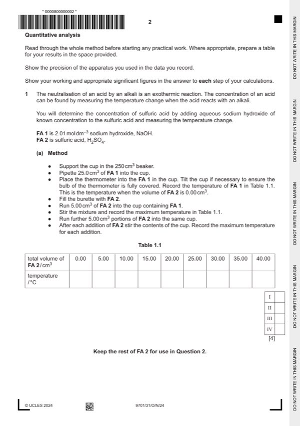
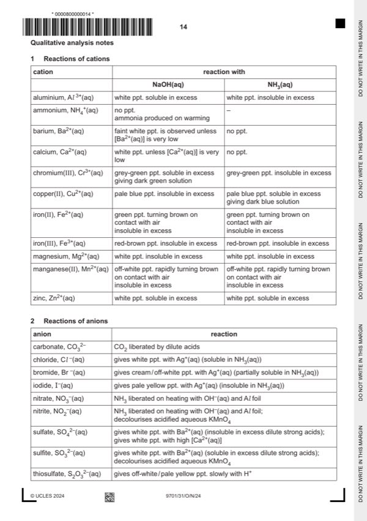

Question 1

Original paper page 2

Original paper page 14
Part 1(a) — solution
I Thermometer readings recorded for all 9 volumes 4
II All thermometer readings ending in .0 or .5.
III and IV
Calculate the difference between 𝑇𝑚𝑎𝑥 for supervisor and candidate.
Award III if 𝛿 ≤ 2.0 oC
Award IV if 𝛿 ≤ 1.0 oC
Mark points
- Include the ideas shown in the solution above.
Part 1(b) — solution
I Unambiguous labelled axes with names and / or correct units: e.g. / cm3, (ºC), in cm3 5
and suitable (linear) scales based on 1, 2 or 5 per 20 small squares e.g. 10 cm3 on 20 small squares.
The intersection is part of the data.
II All points plotted accurately
III Both lines of best fit.
The line for the increase in temperature must be a smooth curve and the line for cooling may be either straight or a smooth
curve.
IV Both lines extrapolated to intersect at or above the highest recorded temperature.
V Volume at intersection read correctly to 1 dp.
Mark points
- Include the ideas shown in the solution above.
Part 1(c)(i) — solution
- amount of NaOH = 25.0 2.01/1000 = 5.025 10–2 mol
Mark points
- amount of NaOH = 25.0 2.01/1000 = 5.025 10–2 mol
Part 1(c)(ii) — solution
Answer: AND
- [M1] Correctly uses 2
- [M2] Some working shown in calculation
- [M1] 1000/(b) mol dm−3
Mark points
- [M1] Correctly uses 2
- [M2] Some working shown in calculation
- [M1] 1000/(b) mol dm−3